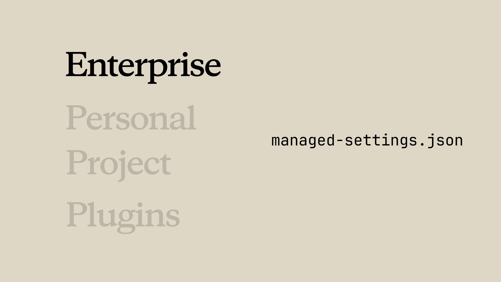

학습 내용
예상 소요 시간: 15분
이 레슨을 마치면 다음을 할 수 있습니다:
- 스킬 검증기를 사용해 디버깅 전에 구조적 문제를 미리 파악하기
- 스킬 트리거 및 로딩 관련 일반적인 문제를 진단하고 수정하기
- 엔터프라이즈, 개인, 프로젝트, 플러그인 스킬 간의 우선순위 충돌 해결하기
- 누락된 의존성, 권한, 경로 문제 등 런타임 오류 디버깅하기
스킬 문제 해결
(4분)
스킬이 예상대로 작동하지 않을 때, 문제는 대개 몇 가지 예측 가능한 유형 중 하나에 해당합니다. 이 영상에서는 트리거가 되지 않는 스킬부터 우선순위 충돌, 런타임 오류까지 각 유형을 살펴보고 체계적인 문제 해결 방법을 안내합니다. 또한 스킬 검증기 도구와 claude --debug를 사용해 로딩 문제를 진단하는 방법도 배울 수 있습니다.
핵심 요점
- 스킬 검증기 도구부터 시작하세요 — 다른 문제를 디버깅하는 데 시간을 쏟기 전에 구조적 문제를 미리 잡아줍니다
- 스킬이 트리거되지 않는다면, 원인은 거의 항상 설명(description)에 있습니다 — 실제로 요청을 표현하는 방식과 일치하는 트리거 문구를 추가하세요
-
스킬이 로드되지 않는다면,
SKILL.md가 스킬 루트가 아닌 이름이 지정된 디렉터리 안에 있는지, 파일 이름이 정확히SKILL.md인지 확인하세요 - 잘못된 스킬이 사용된다면, 설명들이 너무 비슷한 것입니다 — 더 명확하게 구분되도록 수정하세요
-
런타임 오류의 경우, 의존성, 파일 권한(
chmod +x), 경로 구분자(어디서나 슬래시 사용)를 확인하세요
스킬이 작동하지 않을 때, 문제는 보통 몇 가지 유형 중 하나입니다: 트리거가 되지 않거나, 로드되지 않거나, 충돌이 있거나, 런타임에 실패하는 경우입니다. 다행히 대부분의 수정은 꽤 간단합니다.
스킬 검증기 사용하기
먼저 에이전트 스킬 검증기 명령어를 사용해 보세요. 설치 방법은 운영 체제마다 다르지만, uv를 사용하는 것이 가장 빠르게 설정할 수 있는 방법입니다.
설치 후, 스킬 디렉터리로 이동하거나 어디서든 명령어를 실행하면 됩니다. 검증기는 다른 문제를 디버깅하는 데 시간을 쏟기 전에 구조적 문제를 미리 찾아줍니다.
스킬이 트리거되지 않는 경우
스킬이 존재하고 검증도 통과했지만 Claude가 예상대로 사용하지 않는 경우, 원인은 거의 항상 설명(description)에 있습니다.
Claude는 의미론적 매칭을 사용하므로, 요청 내용이 설명의 의미와 충분히 겹쳐야 합니다. 겹치는 부분이 부족하면 매칭되지 않습니다. 다음과 같이 해보세요:
- 실제로 요청을 표현하는 방식과 설명을 비교해 보세요
- 사용자가 실제로 말할 법한 트리거 문구를 추가하세요
- "이거 프로파일링 도와줘", "왜 느린 거야?", "더 빠르게 만들어줘" 같은 다양한 변형으로 테스트해 보세요
- 어떤 변형이 트리거에 실패하면, 해당 키워드를 설명에 추가하세요
스킬이 로드되지 않는 경우
Claude에게 "사용 가능한 스킬이 뭐야?"라고 물었을 때 스킬이 나타나지 않는다면, 다음 구조적 요건을 확인하세요:
-
SKILL.md파일은 스킬 루트가 아닌 이름이 지정된 디렉터리 안에 있어야 합니다 -
파일 이름은 정확히
SKILL.md여야 합니다 — "SKILL"은 모두 대문자, "md"는 소문자
claude --debug를 실행하면 로딩 오류를 확인할 수 있습니다. 스킬 이름이 언급된 메시지를 찾아보세요. 이것만으로도 문제를 바로 파악할 수 있는 경우가 있습니다.
잘못된 스킬이 사용되는 경우
Claude가 잘못된 스킬을 사용하거나 스킬 간에 혼동하는 것처럼 보인다면, 설명들이 너무 비슷한 것입니다. 더 명확하게 구분되도록 만드세요. 최대한 구체적으로 작성하면 Claude가 스킬을 언제 사용할지 결정하는 데 도움이 될 뿐만 아니라, 비슷하게 들리는 다른 스킬과의 충돌도 방지할 수 있습니다.
스킬 우선순위 충돌
개인 스킬이 무시되고 있다면, 엔터프라이즈 또는 더 높은 우선순위의 스킬이 같은 이름을 가지고 있을 수 있습니다.

예를 들어, 엔터프라이즈 "code-review" 스킬이 있고 개인 "code-review" 스킬도 있다면, 항상 엔터프라이즈 스킬이 우선합니다. 선택지는 다음과 같습니다:
- 스킬 이름을 더 구별되는 이름으로 변경하세요 (보통 이 방법이 더 쉽습니다)
- 엔터프라이즈 스킬에 대해 관리자와 상의하세요
플러그인 스킬이 나타나지 않는 경우
플러그인을 설치했는데 스킬이 보이지 않나요? 캐시를 지우고, Claude Code를 재시작한 후, 다시 설치해 보세요.
그래도 스킬이 나타나지 않는다면 플러그인 구조가 잘못된 것일 수 있습니다. 이럴 때 검증기 도구가 진가를 발휘합니다.
런타임 오류
스킬이 로드는 되지만 실행 중에 실패하는 경우입니다. 몇 가지 일반적인 원인:
- 누락된 의존성: 스킬이 외부 패키지를 사용한다면 해당 패키지가 설치되어 있어야 합니다. 스킬 설명에 의존성 정보를 추가하여 Claude가 필요한 것을 알 수 있게 하세요.
-
권한 문제: 스크립트에는 실행 권한이 필요합니다. 스킬이 참조하는 모든 스크립트에
chmod +x를 실행하세요. - 경로 구분자: Windows에서도 어디서나 슬래시(/)를 사용하세요.
빠른 문제 해결 체크리스트
- 트리거가 안 되나요? 설명을 개선하고 트리거 문구를 추가하세요.
- 로드가 안 되나요? 경로, 파일 이름, YAML 문법을 확인하세요.
- 잘못된 스킬이 사용되나요? 각 스킬의 설명을 더 명확하게 구분하세요.
- 다른 스킬에 가려지나요? 우선순위 계층 구조를 확인하고 필요하면 이름을 변경하세요.
- 플러그인 스킬이 없나요? 캐시를 지우고 다시 설치하세요.
- 런타임 실패? 의존성, 권한, 경로를 확인하세요.
레슨 돌아보기
- 본인의 업무에서 이러한 문제 해결 상황을 경험한 적이 있나요? 어떤 해결책이 가장 많은 시간을 절약해 주었을까요?
- 팀과 스킬을 공유하기 전에 검증하는 프로세스를 어떻게 구축하겠습니까?
강좌 마무리
에이전트 스킬 입문 과정을 완료하신 것을 축하합니다! Claude Code에서 스킬을 생성, 구성, 공유, 문제 해결하는 방법을 배우셨습니다. 이제 자신만의 워크플로우를 위한 스킬을 구축하기 시작할 때, 최고의 스킬은 실제 불편함에서 나온다는 것을 기억하세요 — 가장 자주 반복하는 지시사항부터 시작해 보세요.
피드백
업무에서 스킬을 어떻게 활용하고 계신지, 이 강좌에 대한 피드백을 듣고 싶습니다. 피드백을 여기에 공유해 주세요.